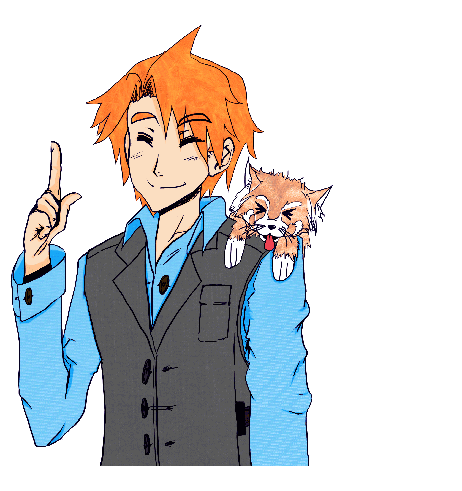
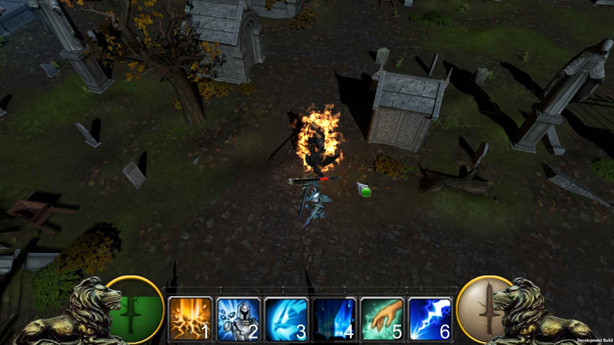
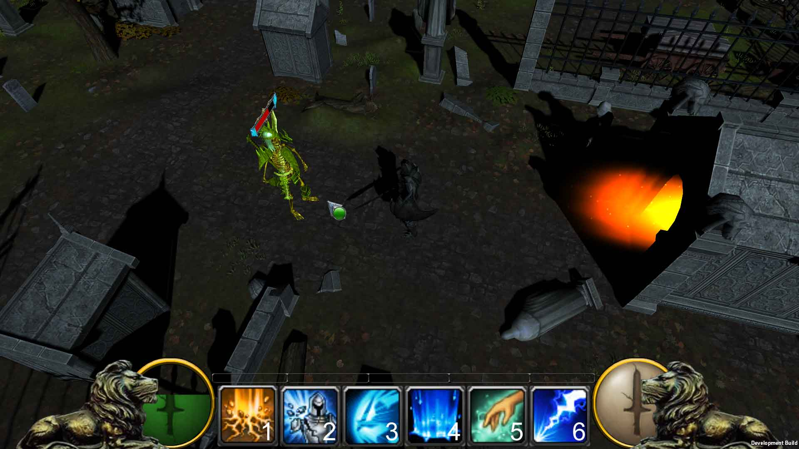
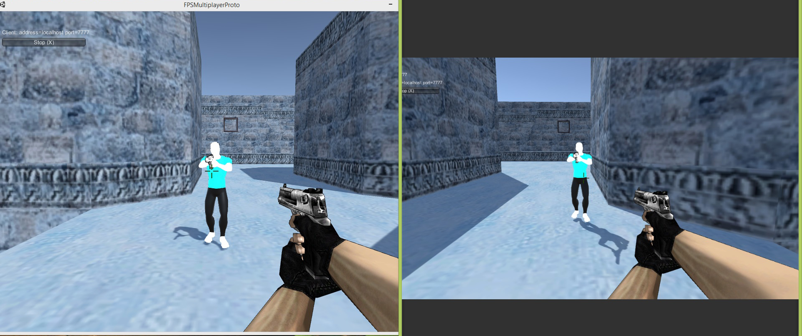
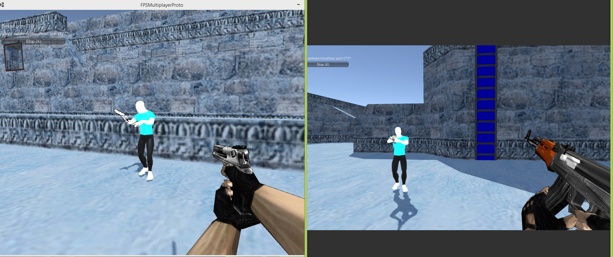

-
Prototype de RPG 3D
CloseType de Jeu : Prototype de platformer 2D jouable à un joueur.
Moteur de Jeu : Unity3D 5.5
Langage de Programmation : C#
Le but de ce prototype était de créer un template de jeu d'aventure en 2D avec un personnage pouvant sauter d'une plateforme à une autre, récupérer une quête à un PNJ et l'accomplir, valider une quête, gérer la mort et la perte de points de vie en cas de contact avec un projectile.
Réalisé en un week-end grâce aux assets (sons, sprite des backgrounds et du personnage) offerts par Alan Thorn, instructeur à Udemy et fondateur du studio Wax Lyrical GamesTélécharger l'executable : Executable
Télécharger les scripts : Code Source
Télécharger le projet Unity au complet: Projet Unity
-
Cyborg Battle - jeu réalisé en C++ + SDL2.0
CloseType de Jeu : Hack'n slash en 2D
Moteur de Jeu : moteur 2D perso
Langage de Programmation : C++ & librairies SDL2.0
 Jeu réalisé en une semaine grâce aux cours et aux assets fournis par Matthew Carr
Jeu réalisé en une semaine grâce aux cours et aux assets fournis par Matthew Carr
Télécharger l'installeur : Installeur
Accéder au projet Github : Lien GitHub
-
VESPER - Court Métrage (2013)
CloseVESPER
Synopsis:
Trois gangsters aussi timbrés les uns que les autres, exécutent un flic un peu trop curieux. On distingue "Le Cerveau", il est malin, il est fourbe, on ne sait jamais où il va frapper. On trouve à ses côtés "La Gâchette", la violence fait partie de son quotidien. Et pour finir, "Le Fossoyeur", tout est dit dans le nom... La réaction des forces de l'ordre ne se fait pas attendre, une descente dans un bar pour mettre fin à ce carnage.
Court-métrage réalisé dans le cadre du cours de Gestion de Projet pour le DUT Métiers du Multimédia et de l'Internet, à Vichy. Diffusé au cinéma Etoile de Vichy lors du festival du Court Métrage de Vichy en 2014. Ecrit, tourné et monté sur 3 mois pendant nos temps libre.
Réalisation : Thomas Tafforeau (Acteur, Scénariste, Réalisateur, Monteur, Mixage, SFX),
Samuel Deschatres (Acteur, Scénariste, Réalisateur),
Marc Portet (Acteur, Scénariste, Réalisateur, Prise de son),
Lucile Garcia Bastida (Actrice, Scénariste, Réalisatrice),
Adrien Faure (Acteur, Réalisateur, Prise de son),
Arnaud Friconnet (Acteur, Réalisateur, Prise de son, Voix Off).
Année : 2013
Durée : 7m57s
Décors : Environs de Vichy, bar l'Ambassadeur.
Remerciements :
Monsieur Henry Vautrin (Professeur de Gestion de Projet),
Romuald Carbone (Prise de son à l'Ambassadeur et figuration),
Romuald Carruesco (Prise de son à l'Ambassadeur et figuration),
Benjamin Challus (Prise de son à l'Ambassadeur et figuration),
Clément Riberolles (Prise de son et voiture),
Bar Les Ambassadeurs - Vichy,
Airsoft Addicts
IUT MMI Vichy - Pôle Universitaire Lardy, Campus Albert Londres
Bonus : BETISIER :
-
Guild Up - Serious Game d'E-learning
CloseGuild Up Type de Jeu : Plateforme d'E-Learning online avec éléments de gamification
Moteur de Jeu : Unity 2017.X
Langage de Programmation : C#
Projet réalisé au sein de l'entreprise Pulpsoft, mon rôle était d'ajouter des fonctionnalités au gameplay et à l'UI.
Guild Up est une plateforme d'E-learning en ligne produite par Eden Quest et réalisée par Pulpsoft.

Cette plateforme est notamment utilisée et reconnue par Orange et BNP Paribas pour former leurs employés et entraîner un esprit d'entente et de coopération entre les utilisateurs.
Cependant il faut avoir des accès aux serveurs qui dépendent de l'entreprise souhaitant utiliser cette plateforme,
je ne peux fournir ces identifiants mais les quelques images ainsi que vidéos qui agrémentent cette présentation devraient suffir à vous donner une idée globale de ce jeu.Play Store (Gratuit - mais nécessite un login/mdp): Guild Up Android
Apple Store (Gratuit - mais nécessite un login/mdp): Guild Up IPhone
-
Platform Switcher 3D
CloseType de Jeu : Prototype de sidescroller et platformer 3D jouable à un joueur.
Moteur de Jeu : Unreal Engine 4.4
Langage de Programmation : C++, et quelques BluePrints
Le but de ce prototype était de créer un template de jeu vue de profil (sidescroller), dans lequel le joueur peut se téléporter d'un plan à un autre (premier plan vers arrière plan et vice-versa) grâce à une capacité déclenchable avec la touche A du clavier. Il doit ainsi utiliser ce pouvoir de manière stratégique pour accéder à des endroits inaccessibles autrement et éviter des pièges posés sur son chemin.
Réalisé en un après-midi grâce aux cours de John Bura, fondateur du studio Mammoth Interactive et instructeur sur le site Udemy.Télécharger l'executable : Executable
Télécharger les scripts : Code Source
Télécharger le projet Unreal Engine au complet: Projet UE 4.4
-
Projet chaine Youtube
Close
Bato & Taro
Un projet de chaîne youtube sur des chroniques à propos des Jeux Vidéos et Visual Novel, présentées sous forme de Visual Novel. Ecriture et création des assets en cours...
-
Projets de jeux en 3D
CloseDivers projets en 3D et 2D réalisés avec Unity (de 5.X à 2019.X)
### PROJET 1 : Global Game Jam 2017 ### SIDE TRICKS Type de Jeu : Runner
Moteur de Jeu : Unity 5.3
Langage de Programmation : C#
Projet réalisé en groupe sur un week-end lors de la Global Game Jam 2017, du 20 au 22 janvier 2017 à l'Enjmin - Angoulême
Pour en savoir plus sur la création de ce jeu, je vous invite à lire le dossier correspondant à la Global Game Jam 2017 que j'ai écrit sur mon blog.
Que vous pouvez lire ici :
Post-Mortem - Retour sur Side Tricks
Partie 1 - Jour 1
Partie 2 - Jour 2
Partie 3 - Dernier Jour
Version de la GGJ 2017 : v. GGJ2017
Version retouchée après la GGJ2017 : v. retouchée sur itch.io
### PROJET 2 ### Awesome Knight Type de Jeu : Point&Click RPG
Moteur de Jeu : Unity 5.5.0
Langage de Programmation : C#
Projet réalisé lors de ma formation sur AwesomeTuts.com.
Le but de ce prototype était de créer un template de RPG en point&click à la manière d'un jeu comme World Of Warcraft, ou encore de League Of Legends.

Dans ce prototype le joueur peut utiliser des compétences grâce aux touches alphanumériques du clavier et du clic droit de la souris.

Le projet a aussi été l'occasion pour moi de mettre en place un navmesh pour permettre à l'IA des ennemis de se déplacer.Awesome Knight Executable : v. Executable
Projet complet téléchargeable ici : v. Projet Unity 5.5.0
### PROJET 3 ### Type de Jeu : Prototype de platformer 2D jouable à un joueur.
Moteur de Jeu : Unity3D 5.5
Langage de Programmation : C#
Le but de ce prototype était de créer un template de jeu d'aventure en 2D avec un personnage pouvant sauter d'une plateforme à une autre, récupérer une quête à un PNJ et l'accomplir, valider une quête, gérer la mort et la perte de points de vie en cas de contact avec un projectile.
Réalisé en un week-end grâce aux assets (sons, sprite des backgrounds et du personnage) offerts par Alan Thorn, instructeur à Udemy et fondateur du studio Wax Lyrical GamesTélécharger l'executable : Executable
Télécharger les scripts : Code Source
Télécharger le projet Unity au complet: Projet Unity
### PROJET 4 ### Prototype de jeu FPS multijoueurs Type de Jeu : FPS multijoueurs LAN/en ligne
Moteur de Jeu : Unity 5.5.0
Langage de Programmation : C#
Projet réalisé lors de ma formation sur AwesomeTuts.com.
Le but de ce prototype était de créer un jeu de tir multijoueurs en vue Première Personne en ligne, à la manière de Counter Strike.

Dans ce prototype le joueur (Client) peut se connecter en LAN à un autre joueur (Host/Serveur) ou bien rejoindre un salon créé par un autre joueur en ligne.
Le joueur peut également changer d'armes, faire des impacts sur les murs et blesser son adversaire (morts et game over pas encore implémentés). 
Le projet a été l'occasion pour moi de découvrir les bases de l'utilisation du NetworkManager et de la manière dont est créé un jeu en ligne grâce à Unity, ainsi que de gérer différentes caméras selon les points de vues des joueurs.FPSMultiProto Executable : v. Executable
Projet complet téléchargeable ici : v. Projet Unity 5.5.0
-
Prototype de FPS
CloseType de Jeu : Prototype de First Person Shooter (FPS) avec vague d'ennemis infinis.
Moteur de Jeu : Unreal Engine 4.4
Langage de Programmation : C++, et quelques BluePrints
Le but de ce prototype était de créer un template de FPS, dans lequel le joueur peut tirer sur des ennemis tout en se déplaçant et augmenter son score. Les vagues d'ennemis sont de plus en plus nombreuses jusqu'à ce que le joueur se fasse inévitablement encercler. Il faut appuyer sur R pour recommencer.
Réalisé en un après-midi grâce aux cours de John Bura, fondateur du studio Mammoth Interactive et instructeur sur le site Udemy.Télécharger l'executable : Executable
Télécharger les scripts : Code Source
Télécharger le projet Unreal Engine au complet: Projet UE 4.4
-
Portfolio (Avant 2016)
ClosePour voir mes autres créations avant 2016, je vous invite à cliquer sur ce lien : Lien vers mes fichiers sur Mega
Télécharger tous mes projets du Portfolio (~400 Mo) avant 2016: Portfolio Complet